Anniversaire 4 ans — thème océan
Baleine, tortue, hippocampe et coquillages dans un dégradé de bleus, présentés sur une étagère à étages avec le prénom et le chiffre.
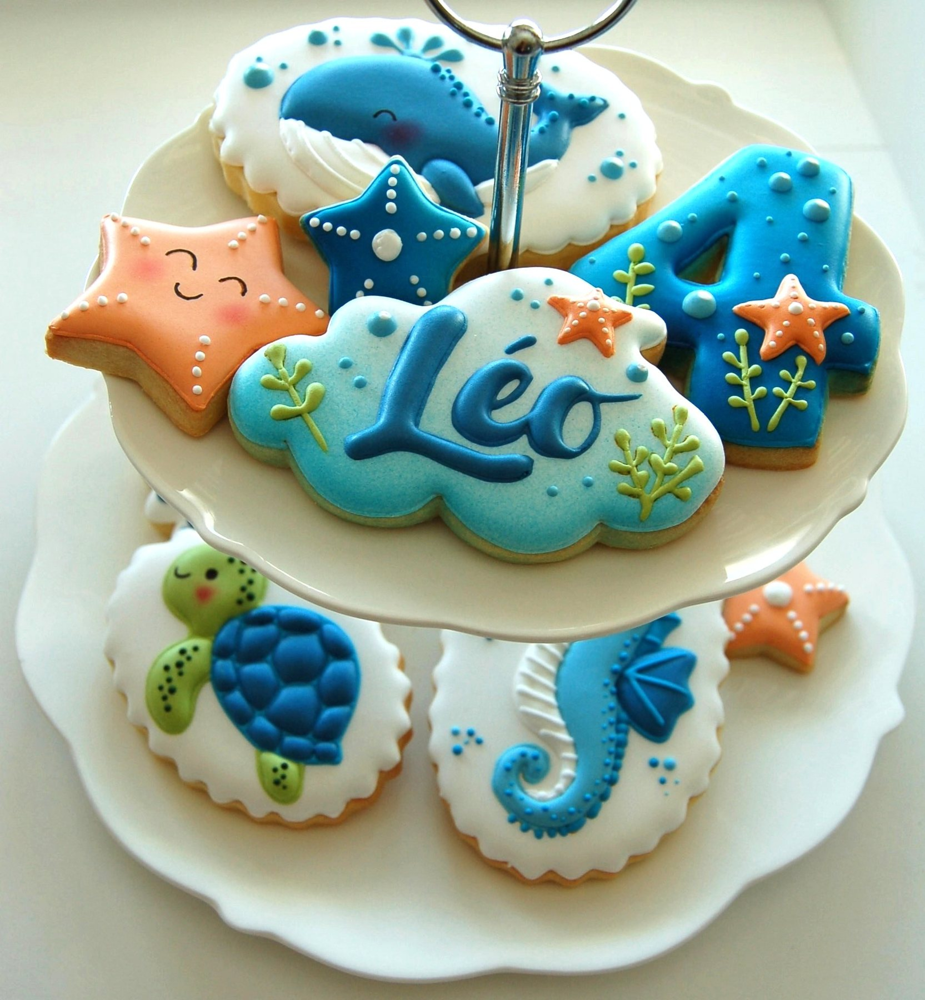

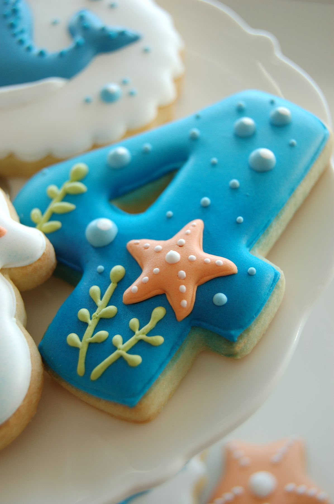


Chaque commande commence par une discussion : un thème, un prénom, une palette de couleurs. Voici les biscuits artisanaux que j'ai décorés à la main dans mon atelier de Domdidier, dans le canton de Fribourg, pour des anniversaires, des baptêmes, des naissances et des entreprises de Suisse romande.
Toutes les photos de cette page proviennent de commandes réellement réalisées.
Des biscuits sablés décorés au glaçage royal, dessinés sur mesure pour l'occasion : forme, couleurs, prénom, âge, logo. Ils se commandent seuls, ou en accompagnement d'une micro-scénographie.
Un thème, un prénom, un âge : je redessine tout l'univers de la fête en glaçage royal, du personnage principal jusqu'au chiffre du gâteau.
Baleine, tortue, hippocampe et coquillages dans un dégradé de bleus, présentés sur une étagère à étages avec le prénom et le chiffre.


Rose poudré, lilas et détails dorés : licornes, nuages au prénom, nœud rubané et chiffre 1 pour une première bougie tout en douceur.
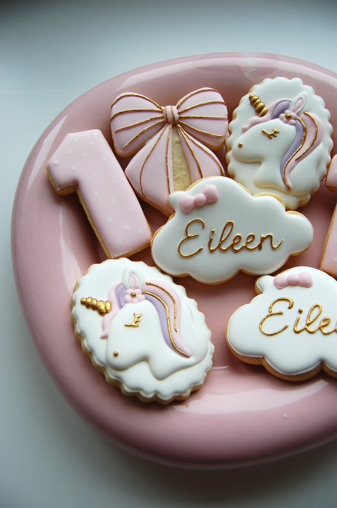


Jaune, orange et noir : pelleteuse, camion-benne, casque et cônes de signalisation, avec la plaque au prénom et le chiffre 1.


Alvéoles de miel, marguerites et petites abeilles, dans des tons miel et blanc cassé.
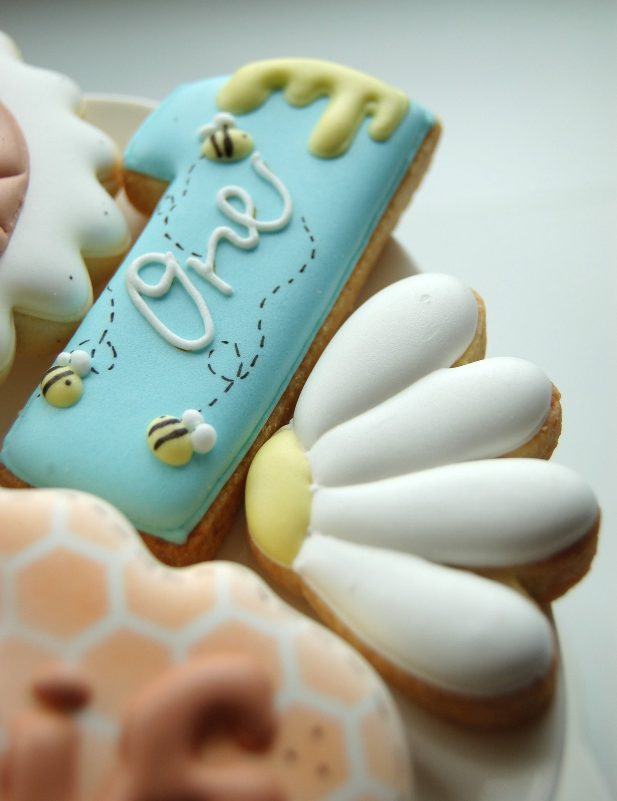
Une passion, un chiffre rond, une palette plus graphique : les anniversaires d'adultes se prêtent particulièrement bien aux biscuits personnalisés à offrir aux invités.
Bordeaux profond, rose et vert : fleurs, nœuds, monogramme et grand chiffre, présentés sur un plateau rose.

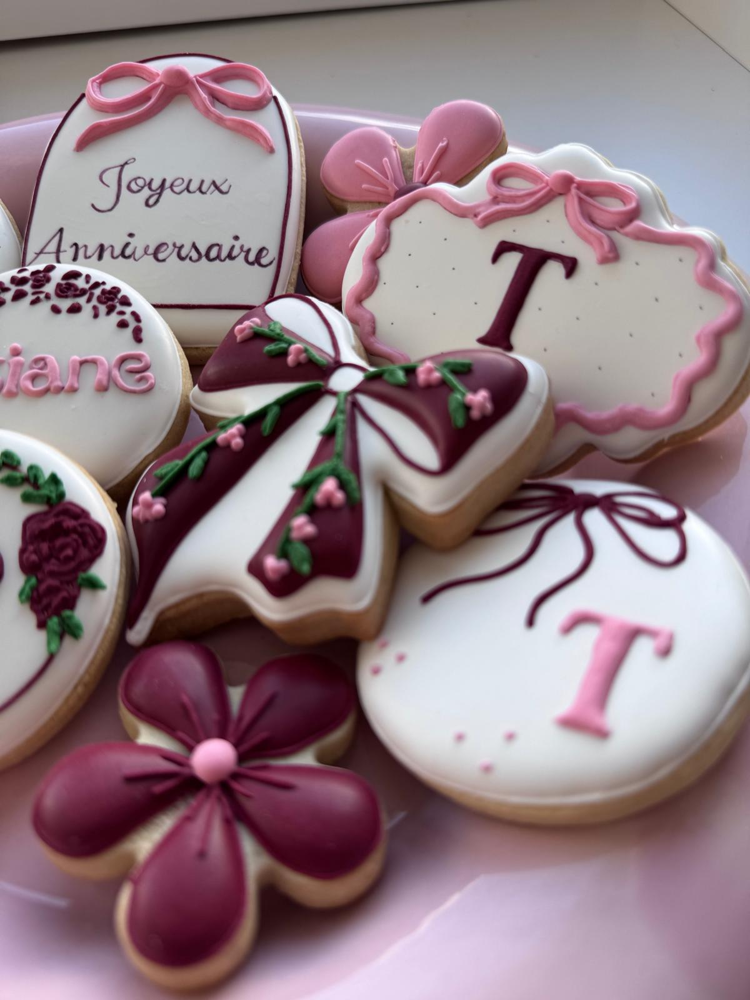

Route sinueuse, drapeaux à damier, casque et panneaux de signalisation, du chiffre 60 jusqu'au « Vroom ».


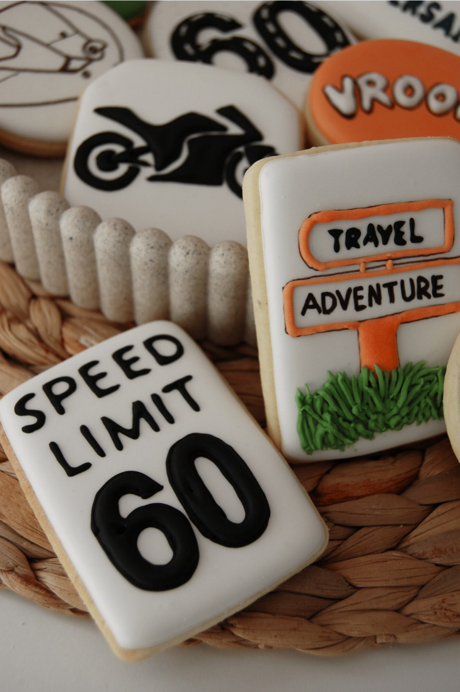
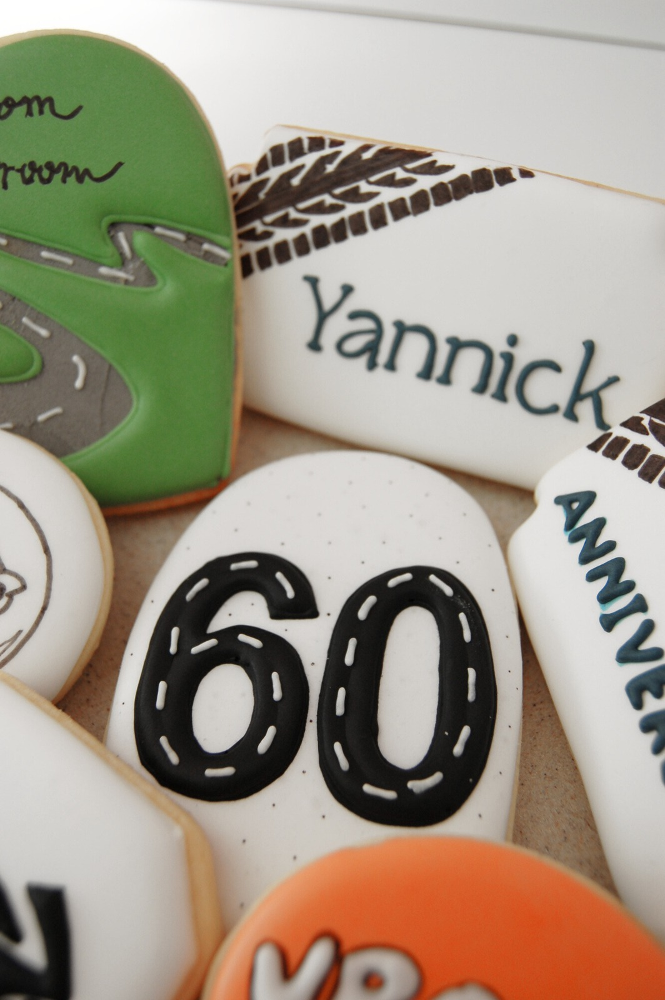
Un vélo de course dessiné au glaçage, décliné en série pour tous les invités.
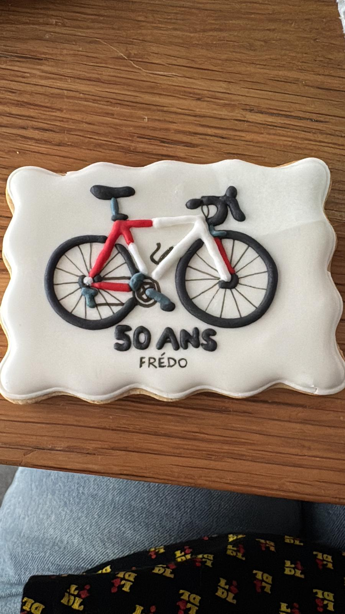

Croix, colombes, branches d'olivier et monogrammes, dans des tons vert sauge, blanc et or rose. Chaque commande reprend le prénom de l'enfant et la date de la cérémonie.

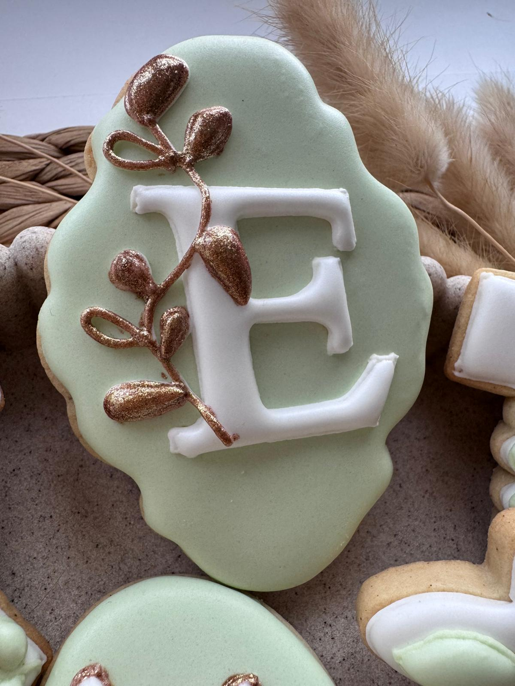


Pour annoncer une grossesse, fêter une arrivée ou remercier les proches, des biscuits doux à offrir ou à poser sur la table.
Bleu ciel, carottes, marguerites et monogramme, autour d'un lapin peint à la main.


Un calendrier avec la date entourée d'un cœur, une silhouette dessinée d'un seul trait et des cœurs nature : de quoi annoncer la nouvelle en douceur.


Cœurs calligraphiés et marguerites en relief, dans un camaïeu de rose et de vert : un coffret à offrir, prêt à poser sur la table du petit-déjeuner.
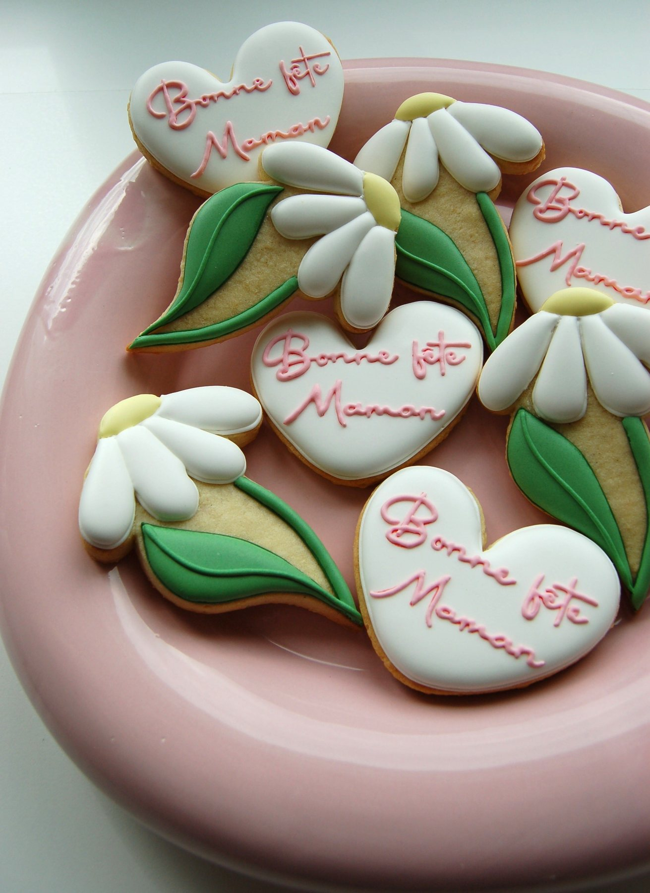

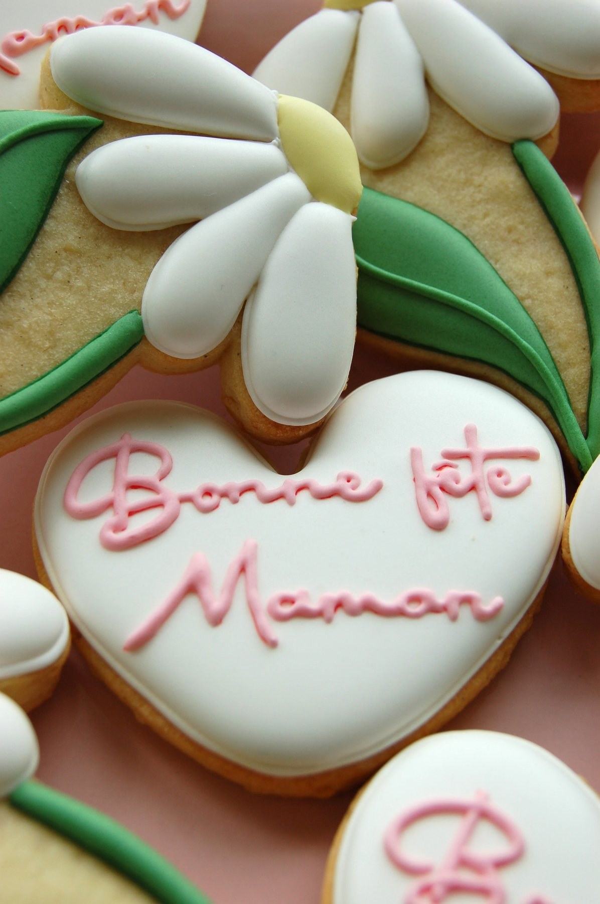
Logo reproduit au glaçage, couleurs de la marque respectées, emballage individuel possible : des biscuits d'entreprise pour vos clients, vos collaborateurs ou vos événements professionnels.
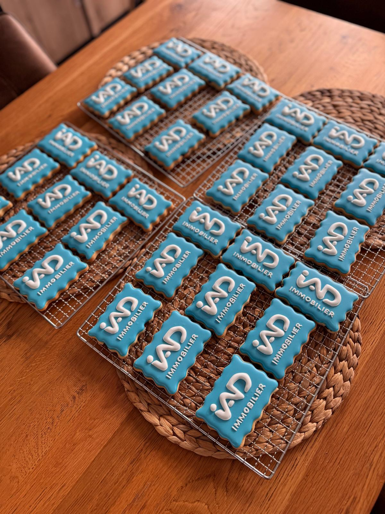

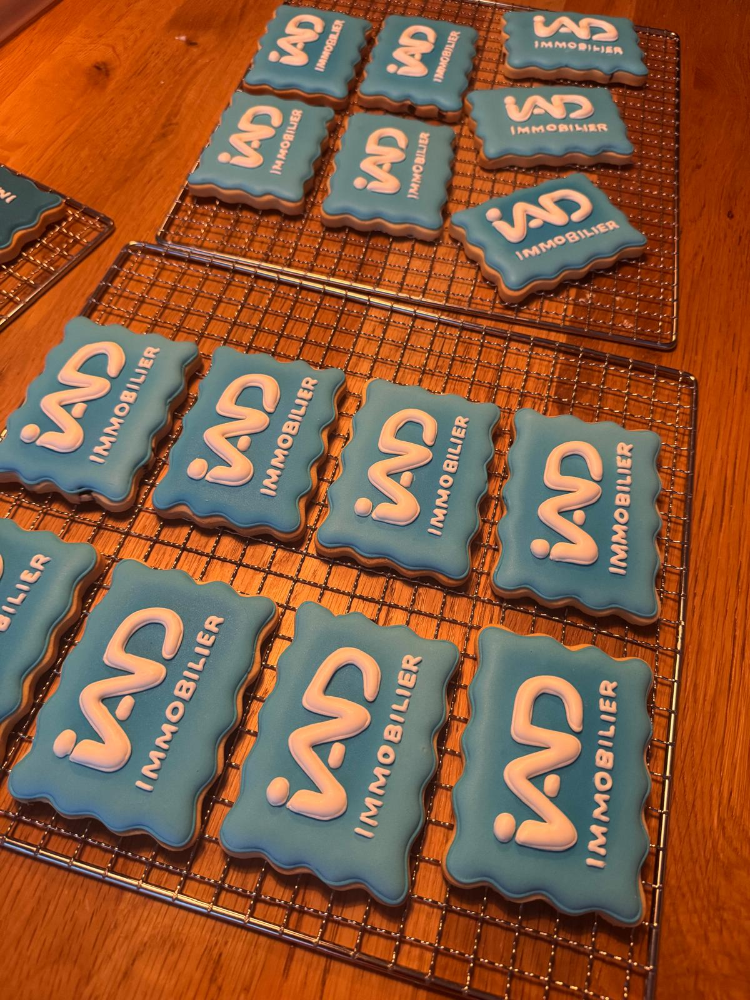


Certaines commandes n'entrent dans aucune case : un prénom calligraphié, une palette choisie, une forme dessinée pour l'occasion. C'est souvent de là que partent les plus jolis projets.
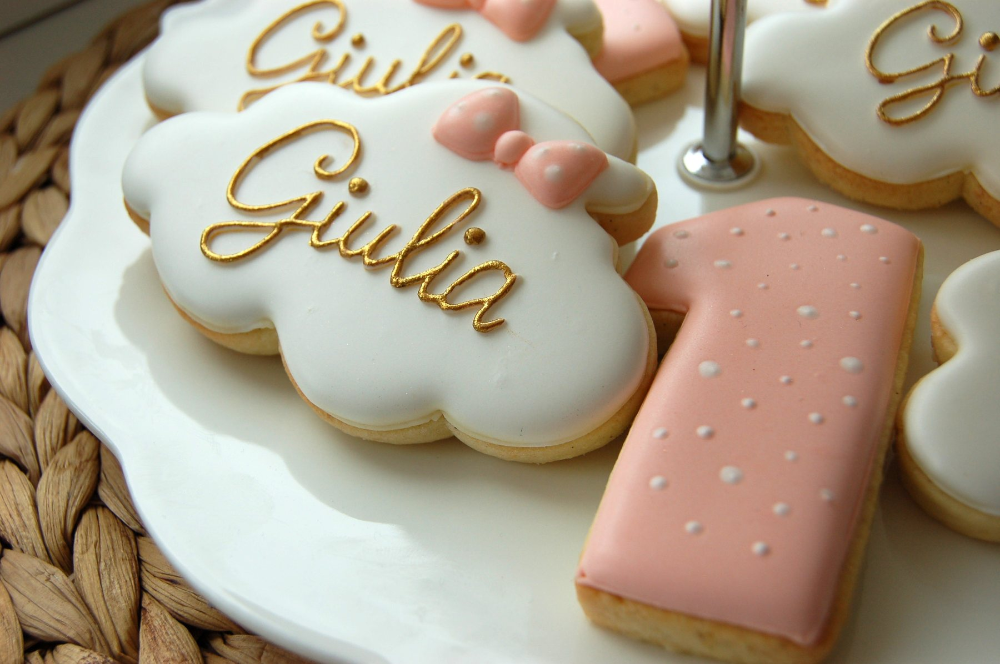

Une micro-scénographie, c'est une petite mise en scène complète que j'installe et démonte moi-même : table dressée, décor floral, vaisselle, papeterie et biscuits personnalisés coordonnés au thème. Elle tient dans un salon comme dans une salle de fête, sans mobiliser tout un espace.
C'est la prestation la plus récente de Jolie Création : cette galerie se remplira au fil des installations. Voici la première réalisation, une table d'anniversaire en camaïeu de lilas.
Décrivez-moi votre occasion, vos couleurs et le nombre de biscuits souhaité : je reviens vers vous avec une proposition sur mesure. Retrait à Domdidier (Fribourg) ou livraison en Suisse, en France et en Europe.